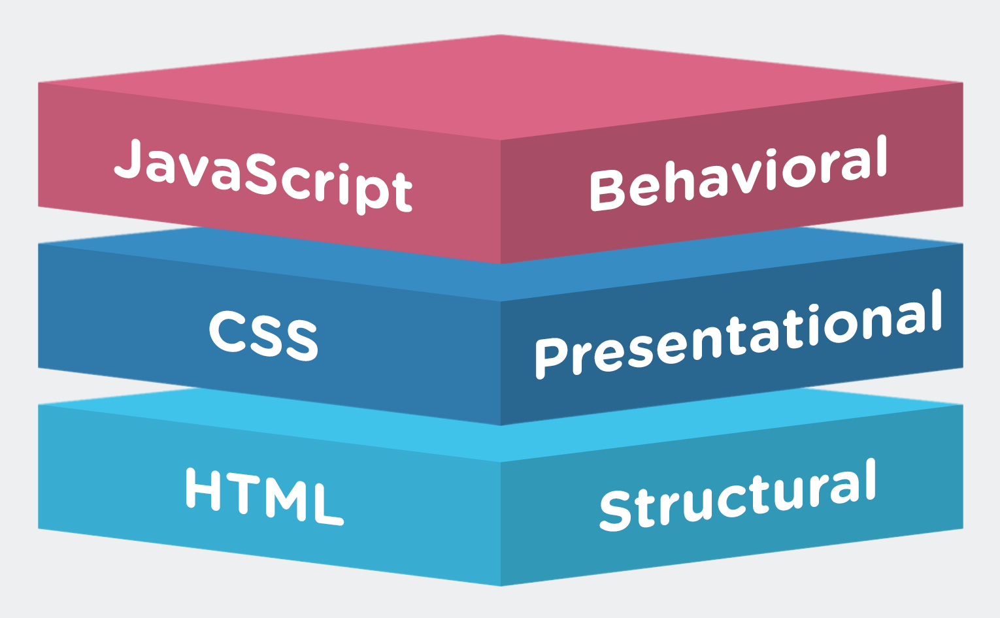
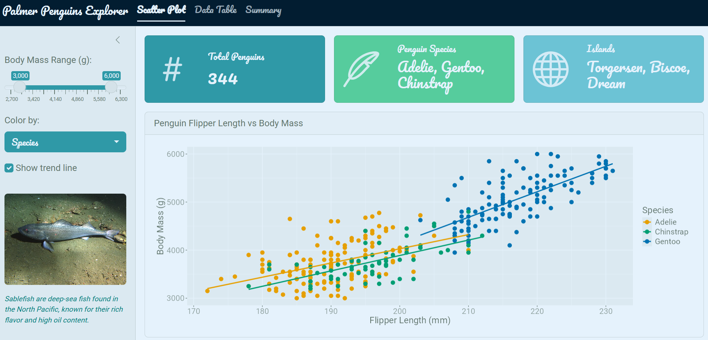
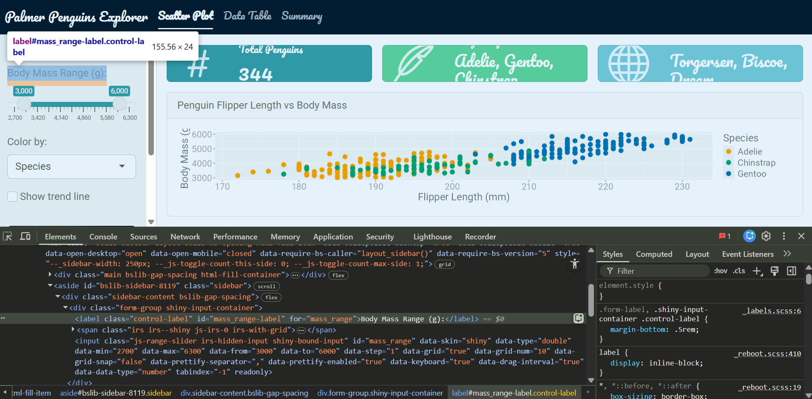
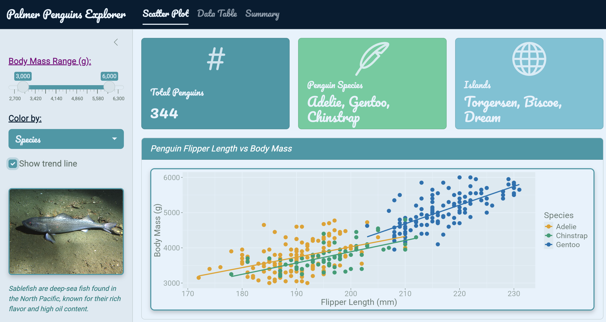

In Part 1 we covered the R packages — {bslib}, {thematic}, {shinyWidgets}, and {bsicons} — that handle roughly 90% of Shiny app theming without writing any HTML or CSS. This post covers the other 10%: understanding the web design fundamentals that underpin Shiny, and using {htmltools} along with custom CSS to fine-tune what the packages can’t reach.
Every webpage — including every Shiny app — is built on three layers:

HTML — the skeleton. Structures content using tags like <div>, <p>, <h1>, and <img>.
CSS — the style. Controls colors, fonts, spacing, borders, and layout.
JavaScript — the interactivity. Makes things move and respond to user actions.
Shiny already wraps HTML, CSS, and JS for you, which is why you can build an app without knowing any of this. But understanding these layers is what unlocks the ability to customize beyond the defaults.
HTML Basics
HTML is made up of tags — containers that define the type of content they hold.
Common tags you’ll encounter in Shiny:
Tag
Purpose
<div>
Generic container
<p>
Paragraph text
<h1> – <h6>
Headings
<img>
Image
Tags are nested to build structure. A simple styled box:
<div style="background: red; padding: 1rem; border-radius: 12px; width: 20%;"><div style="background: blue; padding: 6px 10px;"><p style="font-size: 20px; font-style: italic; text-decoration: underline;"> HTML and CSS</p></div></div>
<p style="font-size: 20px; font-style: italic; text-decoration: underline; background: transparent;">
HTML and CSS
</p>
CSS properties control specific aspects of the visual design:
Property
What it controls
background
Background color or image
padding
Inner spacing
border-radius
Rounded corners
font-size
Text size
border
Border width, style, color
box-shadow
Drop shadows
color
Text color
{htmltools} — Custom HTML in R
{htmltools} lets you write HTML elements directly in R using the tags$ family of functions. This is how you embed custom content inside a Shiny UI without leaving R.
Common tags:
tags$div()
tags$p()
tags$img()
tags$h1() – tags$h6()
tags$head() / tags$link()
Example: Sablefish Sidebar Card
Adding an image with a styled caption to the app sidebar:
ui.R
layout_sidebar(sidebar =sidebar(# ... other sidebar code ... htmltools::tags$img(src ="sablefish.jpg",width ="100%",style ="margin-top: 1rem; border-radius: 6px;" ), htmltools::tags$p("Sablefish are deep-sea fish found in the North Pacific, known for their rich flavor and high oil content.",style ="color: teal; font-size: 0.8rem; font-style: italic;" ) ))

The style = "..." argument is inline CSS — CSS written directly on a single element.
CSS Hierarchy
There are two main places to write CSS in a Shiny app, and they have a priority order:
Inline CSS (highest priority) — style = "..." directly on a tag
External CSS file (lower priority, but best practice for maintainability)
For small tweaks inline is fine. Once you’re styling many elements consistently, an external file is much cleaner.
Linking an External CSS File
Place your styles.css file in the www/ folder of your Shiny app, then link it in the UI:
Moving the inline style from above into the external file:
ui.R
# Inline — beforehtmltools::tags$img(src ="sablefish.jpg",style ="margin-top: 1rem; border-radius: 6px;")# Inline removed — CSS lives in the external file nowhtmltools::tags$img(src ="sablefish.jpg")
/* styles.css — applies to all <img> elements */img {margin-top:1rem;border-radius:6px;}
CSS Selector Types
CSS targets elements using selectors. There are three main types:
Selector
Syntax
Targets
HTML tag
img { }
All <img> elements
Class
.my-class { }
Elements with class="my-class"
ID
#my-id { }
Single element with id="my-id"
The key to using class and ID selectors is knowing what names Shiny assigns to its components. Use your browser’s Inspect tool (right-click → Inspect) to browse the live DOM and find the exact class and ID names:

Putting It Together
/* styles.css *//* Tag selector — targets all images */img {border:#2f99a7ffsolid2px;border-radius:8px;box-shadow:04px8pxrgba(0,0,0,0.2);}/* Class selector — targets Shiny input labels */.control-label {font-weight:bold;color:#021d31ff;text-decoration:underline;}/* ID selector — targets a specific input label */#mass_range-label {color:purple;}/* Class selector — targets bslib card headers */.card-header {background-color:#2f99a7ff;color:white;font-style:italic;}

The 90/10 Workflow
To summarize how packages and custom CSS fit together:
~90% — {bslib} + supporting packages
Theme, layout, icons, value boxes, pre-built widgets
Handles the broad visual identity of the app
~10% — {htmltools} + custom CSS
Fine-tuning individual elements
Targeting specific classes and IDs that bslib doesn’t expose
Start with packages. Reach for HTML and CSS only when you need something more specific.
Summary
Tool
Use for
htmltools::tags$img() etc.
Embedding custom HTML elements in the UI
Inline style = "..."
Quick one-off styles on a single element
External styles.css
Consistent styles applied across many elements
Tag selector
Style all elements of a given type
Class selector
Style a group of related elements
ID selector
Style one specific element
Browser Inspect tool
Find the class/ID names Shiny uses
Citation
BibTeX citation:
@online{hunter2026,
author = {Hunter, Raymond},
title = {R {Shiny} {Aesthetics} {(Part} 2): {Custom} {HTML} and {CSS}},
date = {2026-04-21},
url = {https://ramhunte.github.io/blogs/shiny_aesthetics_css/},
langid = {en}
}
---title: "R Shiny Aesthetics (Part 2): Custom HTML and CSS"description: "Fine-tuning Shiny apps with htmltools, inline styles, external stylesheets, and CSS selectors"author: - name: Raymond Hunter url: https://ramhunte.github.io/date: 2026-04-21citation: url: https://ramhunte.github.io/blogs/shiny_aesthetics_css/image: images/htmltools.pngcategories: [Shiny, R, Web Design]format: html: code-copy: true code-summary: "code" code-line-numbers: false code-tools: true code-block-border-left: true warning: false message: falsetoc: truedraft: false---In [Part 1](../shiny_aesthetics/) we covered the R packages — `{bslib}`, `{thematic}`, `{shinyWidgets}`, and `{bsicons}` — that handle roughly 90% of Shiny app theming without writing any HTML or CSS. This post covers the other 10%: understanding the web design fundamentals that underpin Shiny, and using `{htmltools}` along with custom CSS to fine-tune what the packages can't reach.The full code for the example app is on GitHub: [{{< iconify mdi:github >}} ramhunte/shiny-aesthetics](https://github.com/ramhunte/shiny-aesthetics)------------------------------------------------------------------------## Web Design BasicsEvery webpage — including every Shiny app — is built on three layers:{fig-align="center" width="80%"}**HTML** — the skeleton. Structures content using tags like `<div>`, `<p>`, `<h1>`, and `<img>`.**CSS** — the style. Controls colors, fonts, spacing, borders, and layout.**JavaScript** — the interactivity. Makes things move and respond to user actions.Shiny already wraps HTML, CSS, and JS for you, which is why you can build an app without knowing any of this. But understanding these layers is what unlocks the ability to customize beyond the defaults.------------------------------------------------------------------------## HTML BasicsHTML is made up of *tags* — containers that define the type of content they hold.{fig-align="center" width="50%"}Common tags you'll encounter in Shiny:| Tag | Purpose ||-----------------|-------------------||`<div>`| Generic container ||`<p>`| Paragraph text ||`<h1>` – `<h6>`| Headings ||`<img>`| Image |Tags are nested to build structure. A simple styled box:``` html<div style="background: red; padding: 1rem; border-radius: 12px; width: 20%;"><div style="background: blue; padding: 6px 10px;"><p style="font-size: 20px; font-style: italic; text-decoration: underline;"> HTML and CSS</p></div></div>```:::: {style="background: red; padding: 1rem; border-radius: 12px; width: 20%;"}::: {style="background: blue; padding: 6px 10px;"}``` <p style="font-size: 20px; font-style: italic; text-decoration: underline; background: transparent;"> HTML and CSS</p>```:::::::<br>An image card with a caption:``` html<div style="border: 4px solid teal; border-radius: 12px; padding:1rem; width:25%; margin:0.5remauto;"><img src="images/sablefish.jpg" alt="Sablefish" style="max-width: 100%;"/><p>Sablefish</p></div>```::: {style="border: 4px solid teal; border-radius: 12px; padding: 1rem; width: 25%; margin: 0.5rem auto;"}<img src="images/sablefish.jpg" alt="Sablefish" style="max-width: 100%;"/><p style="margin: 0.5rem 0 0 0;">Sablefish</p>:::<br>------------------------------------------------------------------------## CSS BasicsCSS *properties* control specific aspects of the visual design:| Property | What it controls ||-----------------|----------------------------||`background`| Background color or image ||`padding`| Inner spacing ||`border-radius`| Rounded corners ||`font-size`| Text size ||`border`| Border width, style, color ||`box-shadow`| Drop shadows ||`color`| Text color |{fig-align="center" width="70%"}------------------------------------------------------------------------## `{htmltools}` — Custom HTML in R::::: columns::: {.column width="30%"}{fig-align="center"}:::::: {.column width="70%"}`{htmltools}` lets you write HTML elements directly in R using the `tags$` family of functions. This is how you embed custom content inside a Shiny UI without leaving R.Common tags:- `tags$div()`- `tags$p()`- `tags$img()`- `tags$h1()` – `tags$h6()`- `tags$head()` / `tags$link()`::::::::### Example: Sablefish Sidebar CardAdding an image with a styled caption to the app sidebar:```{r}#| eval: false#| filename: "ui.R"layout_sidebar(sidebar =sidebar(# ... other sidebar code ... htmltools::tags$img(src ="sablefish.jpg",width ="100%",style ="margin-top: 1rem; border-radius: 6px;" ), htmltools::tags$p("Sablefish are deep-sea fish found in the North Pacific, known for their rich flavor and high oil content.",style ="color: teal; font-size: 0.8rem; font-style: italic;" ) ))```{.round fig-align="center"}The `style = "..."` argument is *inline CSS* — CSS written directly on a single element.------------------------------------------------------------------------## CSS HierarchyThere are two main places to write CSS in a Shiny app, and they have a priority order:1. **Inline CSS** (highest priority) — `style = "..."` directly on a tag2. **External CSS file** (lower priority, but best practice for maintainability)For small tweaks inline is fine. Once you're styling many elements consistently, an external file is much cleaner.### Linking an External CSS FilePlace your `styles.css` file in the `www/` folder of your Shiny app, then link it in the UI:```{r}#| eval: false#| filename: "ui.R"ui <-page_navbar(title ="Palmer Penguins Explorer",theme =bs_theme(# ... theme code ... ), tags$head(tags$link(rel ="stylesheet",type ="text/css",href ="styles.css"# file lives in www/styles.css ))# ... other UI code ...)```Moving the inline style from above into the external file:```{r}#| eval: false#| filename: "ui.R"# Inline — beforehtmltools::tags$img(src ="sablefish.jpg",style ="margin-top: 1rem; border-radius: 6px;")# Inline removed — CSS lives in the external file nowhtmltools::tags$img(src ="sablefish.jpg")`````` css/* styles.css — applies to all <img> elements */img { margin-top:1rem; border-radius:6px;}```------------------------------------------------------------------------## CSS Selector TypesCSS targets elements using *selectors*. There are three main types:| Selector | Syntax | Targets ||----------|-----------------|----------------------------------|| HTML tag |`img { }`| All `<img>` elements || Class |`.my-class { }`| Elements with `class="my-class"`|| ID |`#my-id { }`| Single element with `id="my-id"`|The key to using class and ID selectors is knowing what names Shiny assigns to its components. Use your browser's **Inspect** tool (right-click → Inspect) to browse the live DOM and find the exact class and ID names:{.round fig-align="center"}### Putting It Together``` css/* styles.css *//* Tag selector — targets all images */img { border: #2f99a7ff solid 2px; border-radius:8px; box-shadow:04px 8px rgba(0,0,0,0.2);}/* Class selector — targets Shiny input labels */.control-label { font-weight: bold; color: #021d31ff; text-decoration: underline;}/* ID selector — targets a specific input label */#mass_range-label { color: purple;}/* Class selector — targets bslib card headers */.card-header { background-color: #2f99a7ff; color: white; font-style: italic;}```{.round fig-align="center"}------------------------------------------------------------------------## The 90/10 WorkflowTo summarize how packages and custom CSS fit together:- **\~90%** — `{bslib}` + supporting packages - Theme, layout, icons, value boxes, pre-built widgets - Handles the broad visual identity of the app- **\~10%** — `{htmltools}` + custom CSS - Fine-tuning individual elements - Targeting specific classes and IDs that bslib doesn't exposeStart with packages. Reach for HTML and CSS only when you need something more specific.------------------------------------------------------------------------## Summary| Tool | Use for ||-----------------------------|-------------------------------------------||`htmltools::tags$img()` etc. | Embedding custom HTML elements in the UI || Inline `style = "..."`| Quick one-off styles on a single element || External `styles.css`| Consistent styles applied across many elements || Tag selector | Style all elements of a given type || Class selector | Style a group of related elements || ID selector | Style one specific element || Browser Inspect tool | Find the class/ID names Shiny uses |